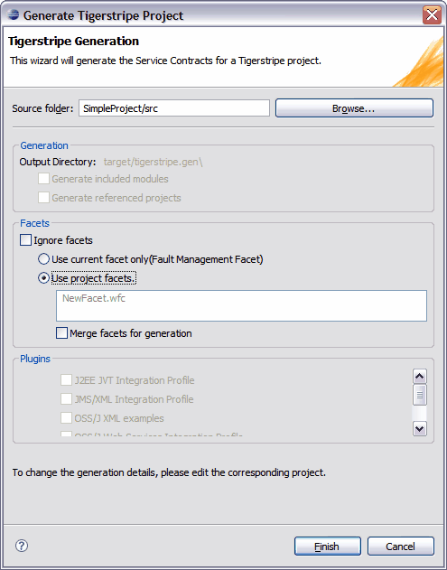

Project Generation with Active Facets
Once your facet is active, you have the option to generate your project, and all selected plug-ins, in the context of the facet only. The Generate Tigerstripe Project dialog box allows you to select either the current active facet, ignore facets, or select from a list of facets to use during generation.

To generate a project with an active facet
- Navigate to the Generation tab of your Tigerstripe Project and enable the desired plug-ins.
- Click Save to save your changes.
- Click Generate on the toolbar. The Generate Tigerstripe Project dialog box opens.
- Accept the default Source Folder or click Browse to navigate to a new location.
- Click Ignore Facets to ignore facets during project generation.
-OR-
Click Use current facet only to only use the currently active facet during project generation.
-OR-
Click Use project facets and select the facet that you want to use during project generation.
- Click Merge facets for generation to merge multiple facets.
- Click Finish to generate your project with the selected facet(s).
Related Topics
Defining a Facet
Defining the Facet Scope
Defining an Active Facet
Defining Facets for Tigerstripe Projects
Merging Facets for Generation
 Defining Facets
Defining Facets
© copyright 2005, 2006, 2007 Cisco Systems, Inc. - All rights reserved